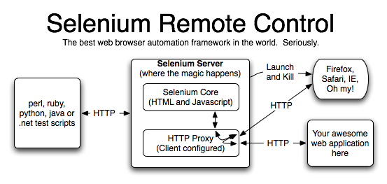

This Selenium Remote Contrtol tutorial will teach you how to start the Selenium Server from the command line, and how to use the Server in interactive mode. It assumes that you are familiar with running programs from the command line. At the end, we'll demonstrate how to write a simple test that does the same thing as what we did in interactive mode.
The Selenium Server is written in Java, and requires the Java Runtime Environment (JRE) version 1.5.0 or higher in order to start. You may already have it installed. Try running this from the command line:
java -versionYou should see a brief message telling you what version of Java is installed, like this:
java version "1.5.0_07"
Java(TM) 2 Runtime Environment, Standard Edition (build 1.5.0_07-b03)
Java HotSpot(TM) Client VM (build 1.5.0_07-b03, mixed mode)
For this example, you'll also need to make sure that you have a supported browser installed.
Once you've got Java installed and ready to go, you can start the Selenium Server from the command line like this:
java -jar selenium-server.jar -interactiveThat will start the Selenium Server and allow you to type commands in the command window. After a number of log messages, you should see the following message:
Entering interactive mode... type Selenium commands here (e.g: cmd=open&1=http://www.yahoo.com)
Let's begin by using Selenium Server to open up a browser. If you're on Windows and want to run your Selenium commands using Internet Explorer, try typing this:
cmd=getNewBrowserSession&1=*iexplore&2=http://www.google.com
If you want to use Firefox, try this:
cmd=getNewBrowserSession&1=*firefox&2=http://www.google.com
You're running the "getNewBrowserSession" command, using the browser of your choice (*iexplore for Internet Explorer, *firefox for Firefox, or *opera for Opera), starting at www.google.com. Typing commands in this window automatically fires off HTTP web requests to the Selenium Server, requesting work to be done. (In non-interactive mode, you can use any automated tool you like to send these HTTP requests to the server, instead of typing them by hand.) When you press Enter, you'll see a message describing the request you just made:
---> Requesting http://localhost:4444/selenium-server/driver?cmd=getNewBrowserSession&1=*firefox&2=http://www.google.comIf all goes well, you should see a new browser window starting with the browser of your choice. Back in the Selenium Server command window, you should see the following message:
Got result: OK,260113 on session 260113
(If this doesn't happen, you may need to take a look at our fine Troubleshooting guide.)
The first part of this message "Got result: OK" says that your request for work was successful. The second part of this message, the number, is a Session ID. The Session ID will be different every time you run the "getNewBrowserSession" command from the command line.
Let's try some more commands; let's do a Google search! We'll start by opening up the Google website. Type this in the Selenium Server command window, replacing the Session ID below with the number you got when you ran "getNewBrowserSession":
cmd=open&1=http://www.google.com/webhp&sessionId=260113
When this command finishes, your browser window should reveal google.com in the lower frame. (The /webhp makes sure we stay on www.google.com; otherwise, we might get redirected to a country-specific Google server, e.g., www.google.fr.) Don't forget that you need to replace the Session ID above with your own personal Session ID, the one you got when you ran the "getNewBrowserSession" command.
Now that Google is open, let's try typing something in the search box. Type this in the Selenium Server command window:
cmd=type&1=q&2=hello world&sessionId=260113
Again, don't forget to replace the Session ID with your own Session ID. If all goes to plan, you should see "hello world" in the search box for your Google search.
Now, let's do a search!
cmd=click&1=btnG&sessionId=260113
You should now see the results of your Google Search in your browser window. You can run dozens of Selenium commands to automate all manner of browsing tasks. For more information on particular commands, you can go look at the Selenium Core section at the Open QA website, or check out the reference materials available for any of our Client Drivers (Java, .NET, Perl, PHP, Python or Ruby).
The next thing we might want to do is read some information back out of the page... for example, let's retrieve the HTML title of the current page, like this:
cmd=getTitle&sessionId=260113
The browser will return the title of the HTML page we've loaded, like this:
Got result: OK,hello world - Google Search on session 260113
That's enough Interactive Mode for now; let's move on to writing some code! But before we go, let's stop the browser we started. Type this command in the Selenium Server command window:
cmd=testComplete&sessionId=260113
When this command finishes, your browser window should automatically close. To quit the Selenium Server, type "quit" or just press Ctrl-C.
As you were running your tests, you may have noticed that your browser started at the following URL:
http://www.google.com/selenium-server/RemoteRunner.html?sessionId=260113
That's a rather unusual URL, because, of course, there is no such file available on www.google.com. If you open up your browser manually and browse to that URL, you'll get a 404 error. What's going on?
The Selenium Server is attempting to circumvent a very difficult problem in JavaScript automated testing: normally, JavaScript you write yourself can't be run on google.com, due to a policy known as the same origin policy. (That write-up is from the Mozilla website, but all modern JavaScript browsers enforce this policy.) The same origin policy states that JavaScript is only allowed to read/modify HTML from the same origin as its source.
That policy makes a lot of sense. Let's say you've got your browser window pointing at, for example, your bank's website, but you also have another webpage open pointing to someone's blog. JavaScript is allowed to read values from web pages, as well as change data appearing on webpages you've loaded. If not for the same origin policy, a malicious blogger could read your bank data, or worse, rewrite your bank page to make you think it was saying something else. The blogger could use JavaScript to trick you into giving him sensitive information.
Despite the soundness of the policy, it creates a problem for Selenium automated tests. If you write a .js file designed to test google.com, the same origin policy denies you the right to just run that .js file with google.com; instead, you'd have to somehow install that .js file on google.com in order to write automated tests against it. In the case of google.com we don't have the right to do this; but even if we did, it would be a hassle to do so.
That's where the Selenium Server comes in. The Selenium Server is acting as a client-configured proxy for the browser that you automatically started with "getNewBrowserSession". Specifically, it configures your browser to use the Selenium Server as a proxy in its browser preferences.
A proxy normally fetches HTML pages on your behalf; if a page can't be found, it honestly reports that the page wasn't there. But the Selenium Server is a very different kind of proxy; when the browser requests a page through the proxy that contains "/selenium-server/" in its URL, the Selenium Server doesn't simply fetch the page from the remote server, but instead automatically returns its own page instead. That makes the browser think that the remote server served up our JS, which allows us to "inject" arbitrary JavaScript into google.com without modifying google.com directly.

However, the solution isn't perfect. Try running your tests like this:
cmd=getNewBrowserSession&1=*iexplore&2=http://www.yahoo.com
cmd=open&1=http://www.google.com&sessionId=260113
cmd=type&1=q&2=hello world&sessionId=260113
In this case, the "start URL" was yahoo.com, so the browser opened to
http://www.yahoo.com/selenium-server/RemoteRunner.html?sessionId=260113
and then we tried to open up google.com (which did work...) and type "Hello World" into the search box. But yahoo.com doesn't have the right to modify google.com, so that operation fails.
All this means is that you have to choose your browser's start URL wisely: if you open up the browser to yahoo.com, you can't use it to test google.com, and vice versa.
However, in some cases, you may be required to test more than one domain at once. The most common case is when you need to test both http://blah.com and https://blah.com. "http:" and "https:" are considered different "origins" from JavaScript perspective, so tests running on one can't run on the other. In that case, for now, you'll have to use one of our experimental browser launchers which support running in multiple domains.
Selenium Server can automatically launch/kill other browsers that we don't yet explicitly support. (Most of the browsers on the "Should Work" supported list need to be launched in this way.) When running your "getNewBrowserSession" command, use the "*custom" browser launcher instead of "*firefox" or "*iexplore", specifying the absolute path to your browser.
cmd=getNewBrowserSession&1=*custom c:\Program Files\Netscape\Netscape\Netscp.exe&2=http://www.google.com
Note that when we launch the browser in this way, you'll have to manually configure your browser to use the Selenium Server as a proxy. (Normally this just means opening your browser preferences and specifying "localhost:4444" as an HTTP proxy, but instructions for this can differ radically from browser to browser, so consult your browser's documentation for details.)
If you attempt to launch a *custom browser but don't configure the proxy correctly, you won't be able to get through even a simple Google test, because you'll get a 404 (File not found) error trying to access http://www.google.com/selenium-server/. Remember, that directory doesn't really exist on Google.com; it only appears to exist when the proxy is properly configured.
Also beware that Mozilla browsers can be a little fidgety about how they start and stop. Avoid launching your browser using a shell script; always prefer to use the binary executable directly. You may need to set the MOZ_NO_REMOTE environment variable to make Mozilla browsers behave a little more predictably.
If you want to use one of the explicitly supported browsers but have installed it in an unusual location, you can tell us that by using the special browser string followed by the absolute path to the executable.
cmd=getNewBrowserSession&1=*firefox c:\firefox\firefox.exe&2=http://www.google.com
That will automatically configure Firefox's proxy settings, but does not require you to add Firefox directly to the path. (You can use this to test multiple different versions of Firefox installed in separate directories.)
You can also use "*custom" to automatically launch a supported browser without configuring its proxy. For example, you could launch Firefox like this:
cmd=getNewBrowserSession&1=*custom c:\Program Files\Mozilla Firefox\firefox.exe&2=http://www.google.com
Again, note that you'll need to manually configure your proxy prior to launching Firefox in this way; otherwise you'll get a 404 error while following the steps in the tutorial.
By default, Selenium runs the application under test in a subframe. (Running the AUT in a subframe gives us a great deal of control over the AUT.) But some apps don't run properly in a subframe, preferring to be loaded into the top frame of the window. In that case, you need to make your application under test run in a seperate window rather than in the default frame. To do that, start selenium server with the -multiWindow parameter:
java -jar selenium-server.jar -multiWindow
Note that multiWindow mode is a little less stable than running in a frame, so you should probably avoid doing this if you can possibly help it.
With that, you're ready to try out one of our Client Drivers. We have Client Drivers available in a variety of languages, allowing you to automatically submit HTTP requests to the Selenium Server and automate your browsing tasks. Click on one of them on the left to get more information about any particular Client Driver, or get information on how to write your own from scratch.
Good luck!